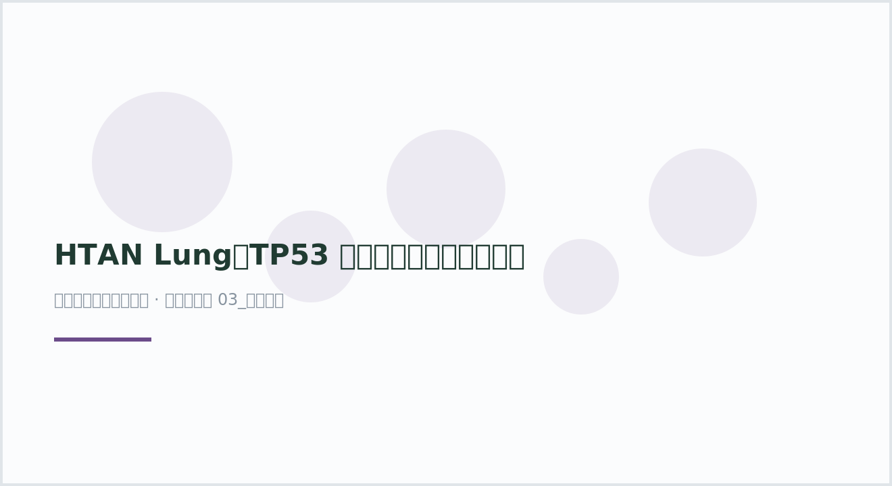

plot44 · 代码 0 · 图 0 · 笔记 5 · 代码库专题
HTAN Lung：TP53 相关肺腺癌细胞与空间图谱
论文：Zhao et al., “A cellular and spatial atlas of TP53-associated tissue remodeling defines a multicellular tumor ecosystem in lung adenocarcinoma”, Nature Cancer 6, 1857–1879 (2025). [论文原文](https://ww

图源：（自动生成占位图）